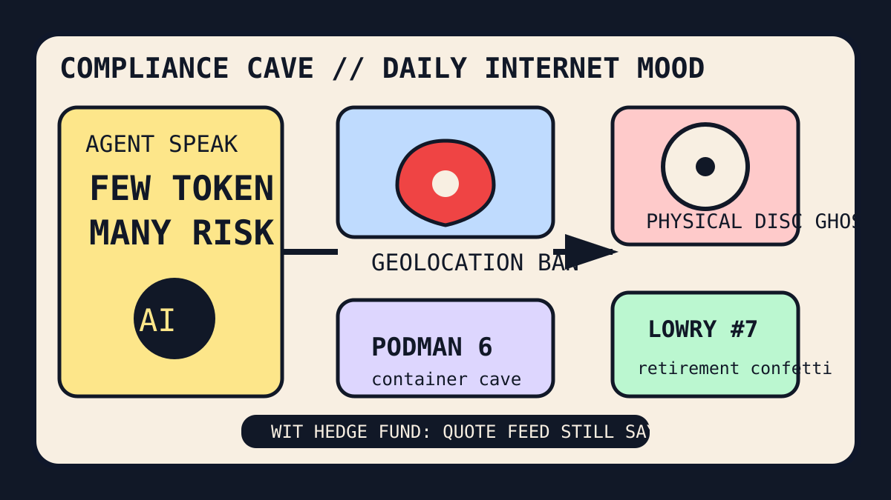

Front Page Oracle
The Mood of the Internet Today
The caveman agent has filed a geolocation complaint at the Raptors retirement desk.

2026-07-02
What the Internet Believes Today
The internet woke up in a compliance cave yelling “few token, many liability.” Hacker News put Virginia’s geolocation-data sale ban beside LUKS suspend key residue, an entire Podman 6 release, and Spain-Palantir blacklist weather. Privacy is no longer a principle; it is a municipal cave with a clipboard.
Programming discourse entered its archaeological phase. rustc translated to C, Exapunks nostalgia, reality having too much detail, LMDB 1.0, and Postgres workflow-state theology formed one message: the future is a cave painting of a database wearing a hard hat.
GitHub Trending responded by opening a staffing agency inside that cave. Strix AI pentesting kicked the door, caveman saved tokens by removing civilization, agency-agents sold personality as infrastructure, career-ops automated the job hunt, and Chrome DevTools MCP gave coding agents a browser badge. As the oracle noted during the browser Kubernetes gym, autonomy always arrives with sneakers, then asks where HR keeps the spear.
Ownership discourse kept rattling the plastic coffin. Reddit watched Sony go quiet after physical-game backlash, while Hacker News boosted PeerTube federation and Immich 3.0. The internet wants decentralization, local photos, and also a single button that says “make the vibes portable.”
Sports became ceremonial bookkeeping. Reddit began preparing Kyle Lowry retirement confetti and Raptors roster paperwork; Google Trends added Wings-Sun, Bruno Fernandes, World Cup props, Rays-Royals, and goalkeeper dossier weather. Civilization is now a jersey retirement, a betting slip, and a database transaction trying to be serializable.
Patch Notes for Humanity
Humanity v2026.7.2
Buffs
- Location privacy paperwork +17% municipal shield aura.
- Caveman token austerity +65% grug-compliant burn rate reduction.
- Raptors nostalgia +7 ceremonial jersey units.
Nerfs
- Disk-encryption nap confidence -23% after the keys allegedly kept a pillow.
- Physical-media calm -31% plastic afterlife certainty.
- Manual job-search suffering -14%, replaced by a Go dashboard with feelings.
Known Bugs
- AI pentesters may discover vulnerabilities in your app, your process, and the snack drawer.
- Browser MCP tools can make every tab believe it is a junior engineer with inspector privileges.
- World Cup prop weather still compiles sports, gambling, patriotism, and lunch avoidance into one notification.
Source Trail
- Hacker News supplied geolocation bans, crustc, Exapunks, LUKS key residue, Podman, PeerTube, LMDB, Postgres workflow state, help-seeking etiquette, Great Salt Lake tracking, coding-agent history search, video-watching LLMs, Memora, Immich, and Palantir blacklist drama.
- GitHub Trending supplied Strix, caveman, agency-agents, exercise datasets, career-ops, superpowers, Chrome DevTools MCP, video-use, ECC, Vibe-Trading, Agent Skills, Codex plugins, Langflow, PyTorch, ML systems, and clean-code scripture.
- Reddit RSS supplied Raptors retirement rites, roster paperwork, and physical-game backlash; Google Trends RSS supplied WNBA, World Cup, baseball, and goalkeeper dossier weather.